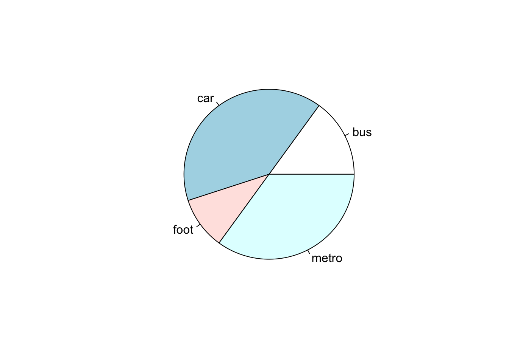

pacman::p_load(tidyverse)6 Data tidying
Let`s learn a consistent way to organize the data in R using a system called tidy data. Getting your data into this format requires some work up front, but that work pays off in the long term.
6.1 Prerequisites
We’ll focus on tidyr, a package that provides a bunch of tools to help tidy up your messy datasets. tidyr is a member of the core tidyverse. We will use pacman package to manage the necessary packages for this chapter.
6.2 Tidy data
You can represent the same underlying data in multiple ways. The example below shows the same data organized in three different ways. Each dataset shows the same values of four variables: country, year, population, and number of documented cases of TB (tuberculosis), but each dataset organizes the values in a different way.
There are three interrelated rules that make a dataset tidy:
- Each variable is a column; each column is a variable.
- Each observation is a row; each row is an observation.
- Each value is a cell; each cell is a single value.

- Why ensure that your data is tidy?
This is a consistent way of storing data. dplyr, ggplot2, and all the other packages in the tidyverse are designed to work with tidy data.
table1 <- read.csv("data/table_1.csv")
head(table1) country year cases population
1 Afghanistan 1999 745 19987071
2 Afghanistan 2000 2666 20595360
3 Brazil 1999 37737 172006362
4 Brazil 2000 80488 174504898
5 China 1999 212258 1272915272
6 China 2000 213766 1280428583Here are a few small examples showing how you might work with table1.
# Compute rate per 10,000
table1 |>
mutate(rate = cases / population * 10000) country year cases population rate
1 Afghanistan 1999 745 19987071 0.372741
2 Afghanistan 2000 2666 20595360 1.294466
3 Brazil 1999 37737 172006362 2.193930
4 Brazil 2000 80488 174504898 4.612363
5 China 1999 212258 1272915272 1.667495
6 China 2000 213766 1280428583 1.669488# Compute total cases per year
table1 |>
group_by(year) |>
summarize(total_cases = sum(cases))# A tibble: 2 × 2
year total_cases
<int> <int>
1 1999 250740
2 2000 296920# Visualize changes over time
ggplot(table1, aes(x = year, y = cases)) +
geom_line(aes(group = country), color = "grey50") +
geom_point(aes(color = country, shape = country)) +
scale_x_continuous(breaks = c(1999, 2000)) # x-axis breaks at 1999 and 2000